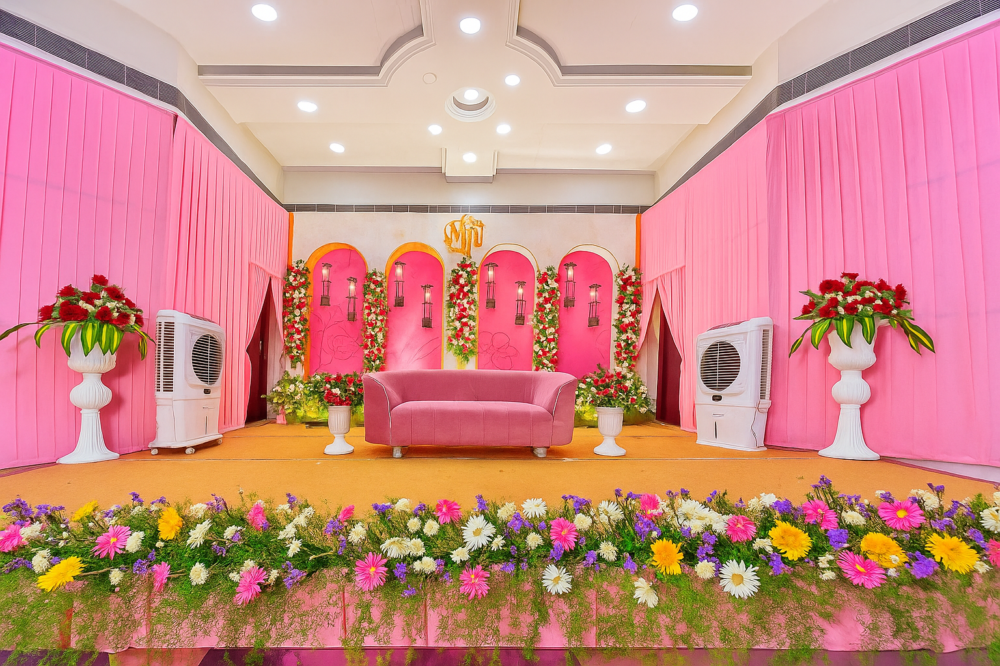
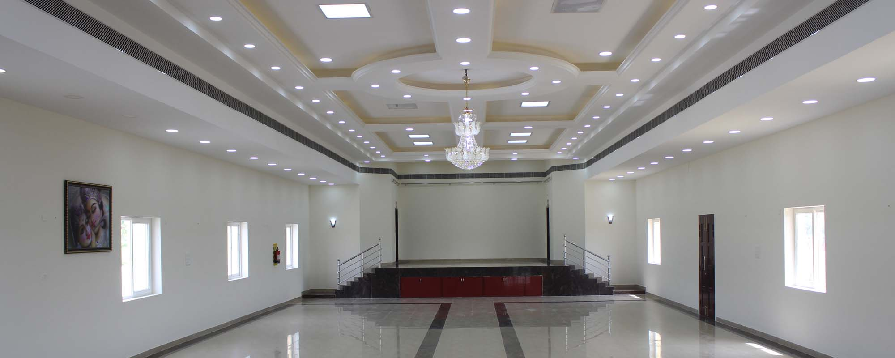
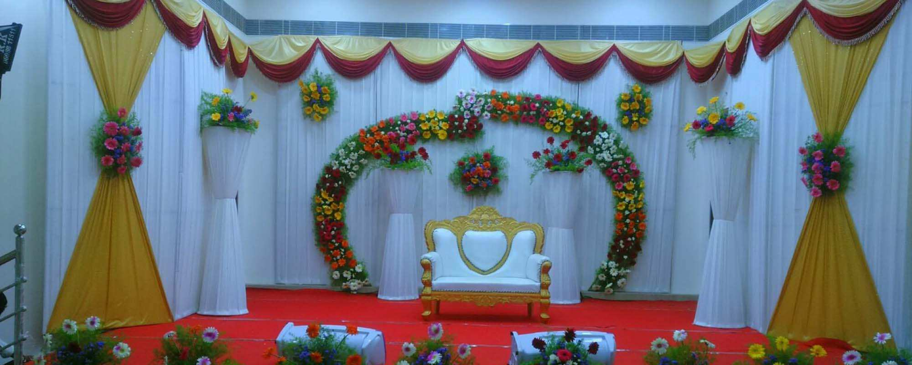
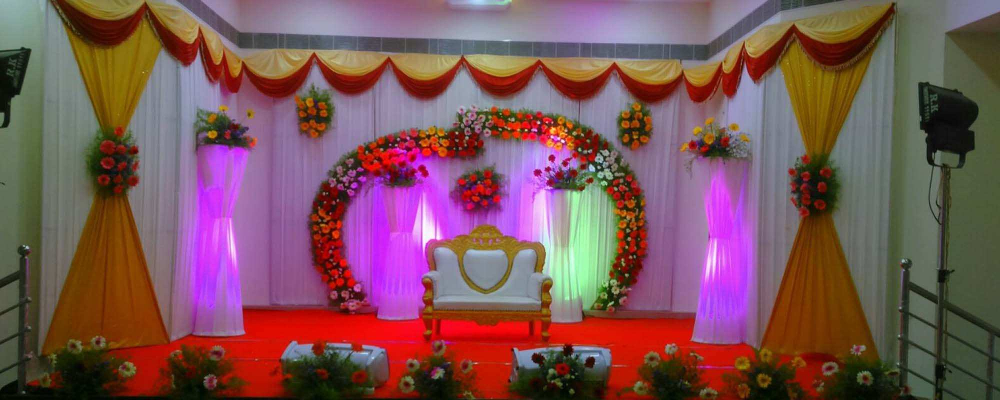
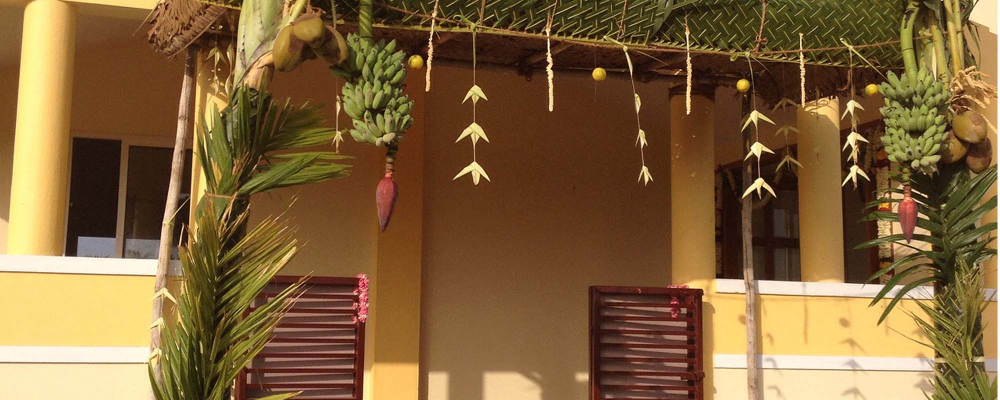
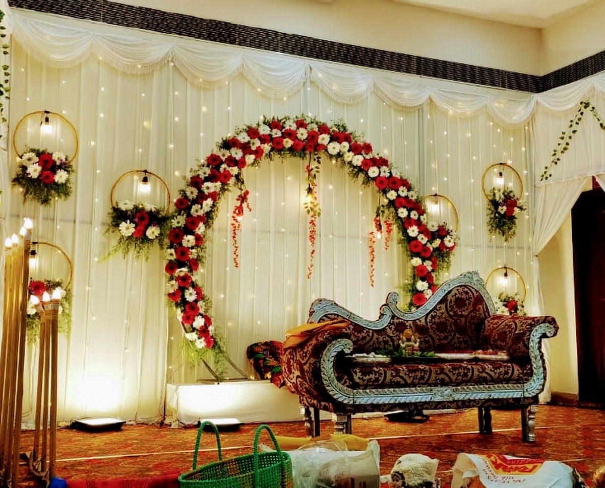
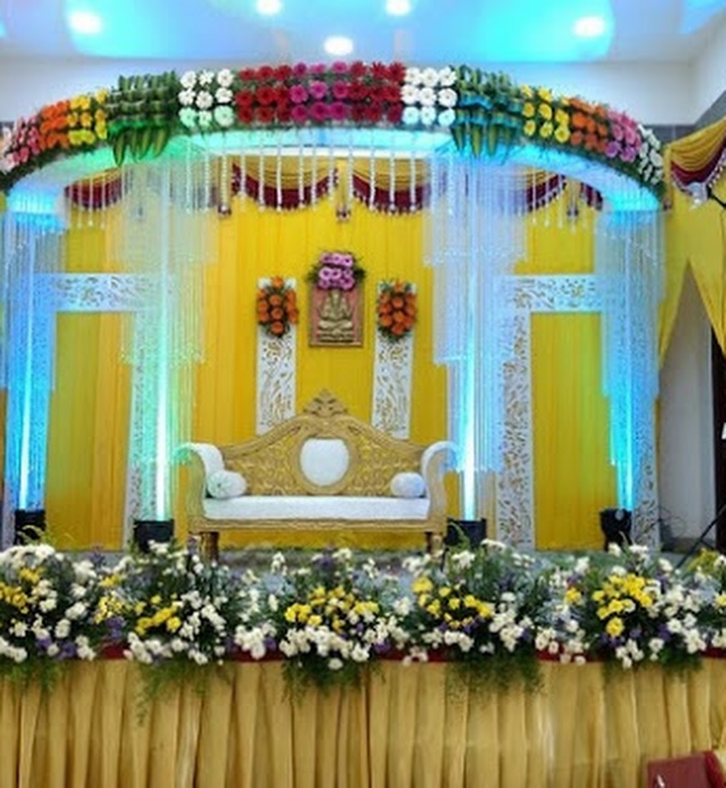

Photo Gallery
A Closer Look at Sri Balakashi Mahal
Step inside before you book. These photos capture the halls, decorated stages, dining spaces, bridal suites, and the serenity of our on-site temple, so you can picture your event before your visit.







